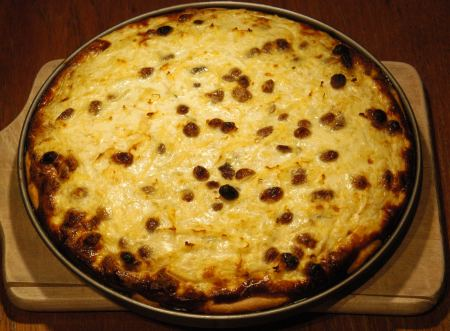

| Zutaten für 4 Portionen | |
| 250 g | Kuchenteig |
| 800 g | Kürbis |
| 100 g | Rosinen oder Sultaninen |
| 1 dl | Milch |
| 2.5 dl | Sauerrahm |
| 3 | Eier |
| 1 TL | Currypulver |
| 1 TL | Salz |
| Pfeffer | |
| 2 EL | Paniermehl |
| 2 EL | Kürbiskerne |
Ofen auf 220°C vorheizen.
30cm Wähenblech fetten.
Kuchenteig auswallen, auf Blech auslegen.
Salz, Curry, Pfeffer, Paniermehl auf Teigboden streuen.
Kürbis schälen und durch die Röstiraffel reiben.
Rosinen oder Sultaninen darunter mischen.
Milch und Sauerrahm mit Schwingbesen verrühren danach mit den Eiern unter das Kürbisfleisch mischen.
Füllung verteilen. Kürbiskerne darüber streuen.
Bei 220 ° im vorgeheiztem Ofen auf unterster Rille 40 Minuten backen.
Fenner's Kürbisrezepte, von Herbert erfasst Code: KÜÄ
Schmeckte am 18.10.2004 gut. Der Kürbis war etwas fade. Die Rosinen geben dem einen etwas süsslichen Geschmack. Das Curry gibt dem Gericht eine interessante Note. Es schmeckt heiss aus dem Ofen nicht so toll aber Lauwarm sehr gut.
Siehe auch: Kürbiskuchen Salzig à la Welsch